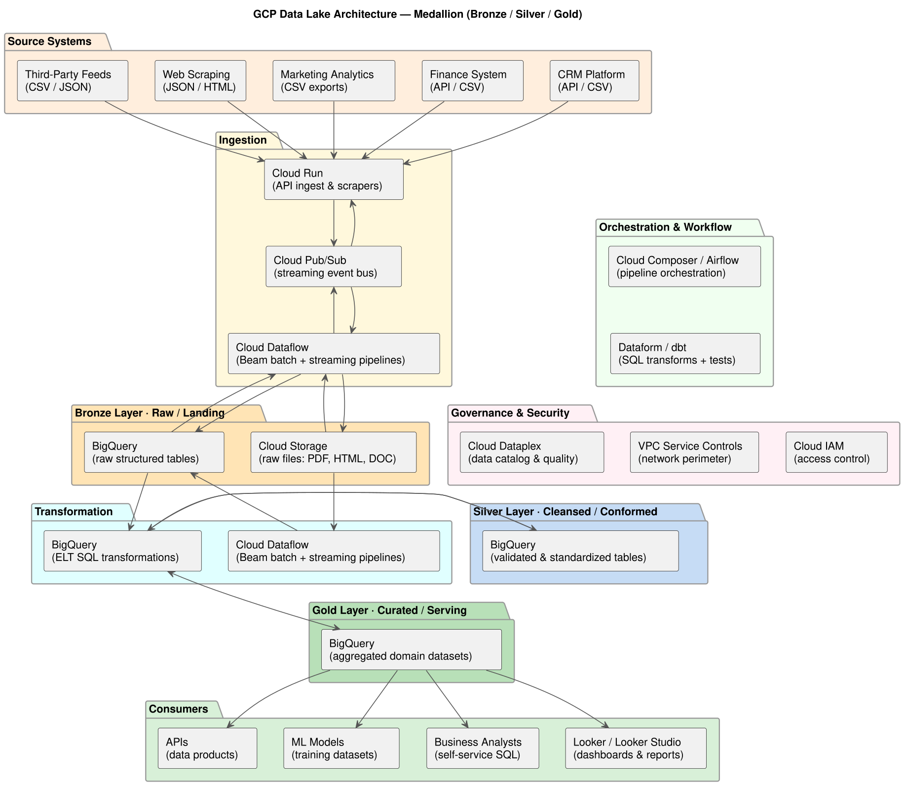
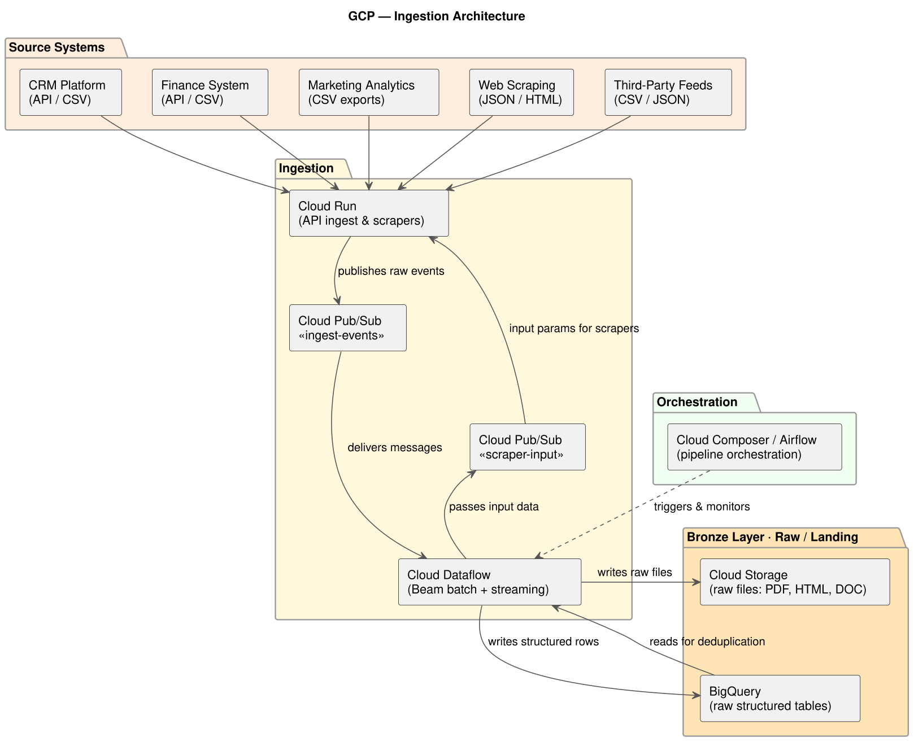
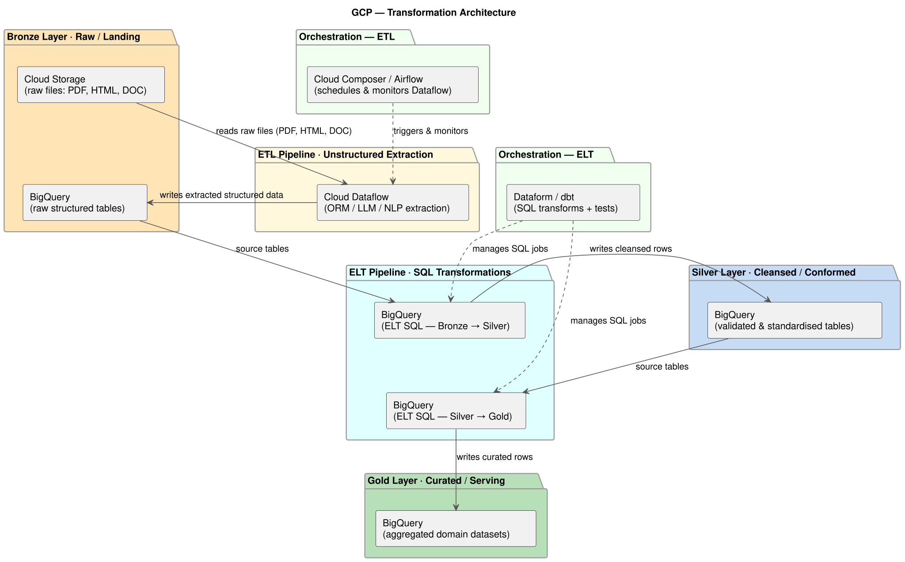
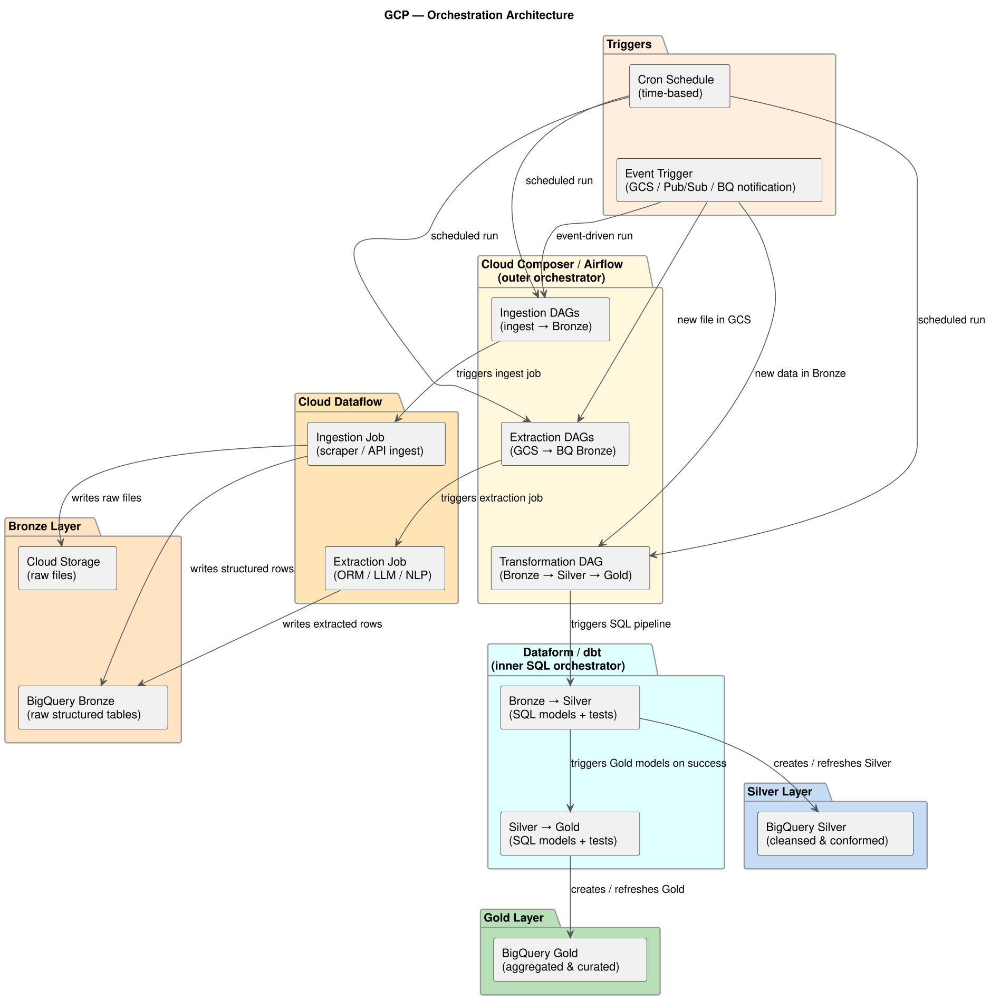

Preface
About This Document
| DISCLAIMER Some information has been redacted for confidentiality. Technical details can differ from the real implementation due to various constraints, but the core narrative remains accurate. |
This document presents the full story of the GCP Data Lake Initiative — from the business problem at "Anonymous Company" that motivated it, through the technical solution designed and built on Google Cloud Platform, to the lessons learned and the path forward.
This document is intentionally written for multiple audiences:
| Audience | What You Will Find | Recommended Sections |
|---|---|---|
Executives & Sponsors |
Strategic value, outcomes, cost, and risk |
Executive Summary, Project Background, Solution Overview, Cost Analysis, Roadmap |
Project & Product Managers |
Scope, timeline, key decisions, trade-offs |
Project Background, Solution Overview, Architecture, Roadmap |
Data Analysts & Scientists |
Data availability, quality, access patterns, tooling |
Solution Overview, Data Lake Design, GCP Services, Recommendations |
Data & Cloud Engineers |
Technical architecture, pipelines, configuration, code |
Architecture, GCP Services, Data Lake Design, Implementation, Security & Compliance |
Security & Compliance Officers |
Data governance, access control, encryption, audit |
Security & Compliance, Recommendations |
How to Read This Document
You can follow along by reading only those callout boxes if you prefer a high-level read.
These sections can be skipped without losing the overall narrative.
These are tips and best practices.
Document Revision History
| Version | Date | Author | Summary of Changes |
|---|---|---|---|
1.0 |
March 2026 |
Data Engineering Team |
Initial release |
1. Executive Summary
The GCP Data Lake Initiative consolidates the organization’s data assets into a single, governed, and scalable platform on Google Cloud Platform, enabling faster decision-making, cost-efficient analytics, and a foundation for more complex data projects, including machine learning.
1.1. The Business Problem
Before this project, the organization faced three critical data challenges:
-
Data Silos — Each business unit maintained its own data store with no cross-team visibility or shared governance.
-
Slow Time-to-Insight — Producing a consolidated report required days of manual data extraction and reconciliation.
-
Low innovation — The fragmented data landscape made it difficult to implement data-driven projects, especially those involving machine learning.
1.2. The Solution
We designed and implemented a centralized Data Lake on Google Cloud Platform using a multi-layer architecture (Bronze → Silver → Gold) that ingests raw data from all source systems, transforms it for quality and consistency, and serves curated datasets to analysts, dashboards, and machine learning workflows.
New data sources can be onboarded in days instead of months, and business users have self-service access to trusted data.
1.3. Key Outcomes
| Outcome | Result |
|---|---|
Unified Data Platform |
100% of priority data sources ingested and catalogued in a single environment. |
Faster Insights |
Report generation time reduced from days to minutes. |
Data Quality |
Automated quality checks catch and quarantine bad data before it reaches consumers. |
Self-Service Analytics |
Analysts and data scientists can explore curated data without waiting on engineering. |
Governance & Compliance |
Centralized access control, lineage tracking, and audit logs across all datasets. |
1.4. Strategic Value
The data lake delivers compounding value over time:
-
Short-term — Eliminate manual data wrangling and reduce reporting backlog.
-
Medium-term — Enable cross-domain and multi-source analytics that were previously impossible.
-
Long-term — Provide the data foundation for predictive analytics and AI-driven products.
1.5. Summary of Investment
| Item | Details |
|---|---|
Cloud Provider |
Google Cloud Platform (GCP) |
Core Services |
Cloud Storage, BigQuery, Dataflow, Dataform, Composer, Pub/Sub, Cloud Run, Dataplex, IAM |
Team |
2 Data Engineers, 1 Cloud Architect, 1 Data Analyst |
Timeline |
6 months (planning through production go-live) |
Estimated Annual Cloud Cost |
See Chapter 10 for a detailed breakdown. |
2. Project Background
2.1. Organizational Context
"Anonymous Company" was in a transitional period. New business lines were being launched, whole teams were being restructured, and the leadership recognized that data would be a critical asset for success. One project in particular had the potential to drive significant growth. However, this required the extraction of structured and unstructured data from hundreds of sources, consolidating them, and making them available for internal analytics and, if required, for external client-facing products. Such a project would have been impossible with the existing data landscape, which was fragmented, siloed, and lacked governance.
2.2. Current State: Before the Data Lake
2.2.1. Data Landscape
Prior to this initiative, data was distributed across the following systems:
| Source System | Source Type | Format Type | Owner | Data Volume (est.) |
|---|---|---|---|---|
CRM Platform |
Internal |
API and CSV exports |
Sales Team |
1M records |
Finance System |
Internal |
API and CSV exports |
Finance Team |
5 years of transactions |
Marketing Analytics |
Internal |
CSV exports |
Marketing Team |
Mixed, inconsistent |
Web Scraping Data |
External |
JSON files, HTML |
Data Engineering Team |
no data, new sources anticipated |
Third-Party Data Feeds |
External |
CSV and JSON |
Data Engineering Team |
no data, new sources anticipated |
2.2.2. Key Pain Points
|
The following pain points were identified through stakeholder interviews and a 2-week discovery phase conducted in Q1 2024. Each maps to a specific architectural decision described in Chapter 4. |
-
No Single Source of Truth
Each team maintained its own version of core metrics, leading to conflicting numbers in leadership meetings.
-
Manual and Error-Prone Pipelines
Critical reports relied on manual CSV exports and Gsheets transformations — a process vulnerable to human error and impossible to audit.
-
Zero Data Reuse
Teams independently collected overlapping data, resulting in duplicated effort and inconsistent definitions.
-
No Governance Framework
There was no centralized view of who had access to what data, or any mechanism to enforce data retention or privacy policies at scale.
-
Scalability Limits
Several source systems were approaching their storage and query performance limits as data volumes grew.
2.3. Drivers for Change
The decision to invest in a data lake was driven by a combination of strategic, operational, and compliance factors:
| Driver | Description |
|---|---|
Strategic Growth |
Leadership identified data-driven decision-making as a core pillar of the 2024–2025 strategy. |
Regulatory Compliance |
New internal data governance policies required centralized audit trails and access controls. |
Ambitions |
High-impact projects were on hold due to the lack of a reliable data foundation. |
Engineering Bandwidth |
The data engineering team spent the majority of its time on data wrangling rather than building revenue-generating features. |
2.4. Project Scope
2.4.1. In Scope
-
Ingestion of all priority data sources listed in the current state table above, with a focus on the new sources anticipated in the next 6–12 months.
-
Design and implementation of a three-layer data lake (Bronze, Silver, Gold).
-
Data cataloguing, lineage tracking, and access governance.
-
Self-service analytics layer for business users.
-
Documentation, runbooks, and knowledge transfer.
2.4.2. Out of Scope
-
Real-time dashboards (planned for Phase 2).
-
ML model training pipelines (planned for Phase 3).
-
Direct integration with all legacy systems (prioritized subset only).
2.5. Project Timeline
| Phase | Period | Deliverables |
|---|---|---|
Discovery & Design |
Month 1–2 |
Architecture design, tool selection, stakeholder alignment, infrastructure provisioning. |
Core Infrastructure |
Month 2–3 |
GCP project setup, networking, IAM, Cloud Storage buckets, BigQuery datasets. |
Ingestion Pipelines |
Month 3–4 |
Dataflow pipelines for each priority source system; Bronze layer populated. |
Transformation Layer |
Month 4–5 |
Silver and Gold layer transformations; data quality checks; Dataplex catalogue. |
Analytics & Handoff |
Month 5–6 |
Self-service layer, dashboards, documentation, team training, go-live. |
2.6. Stakeholders
| Name / Role | Organization | Responsibility |
|---|---|---|
Executive Sponsor |
Leadership |
Strategic alignment and budget approval. |
Data Engineering Lead |
Technology |
Technical design and delivery ownership. |
Cloud Architect |
Technology |
GCP architecture validation and security review. |
Business Analyst |
Operations |
Requirements gathering and acceptance testing. |
3. Solution Overview
3.1. What Is a Data Lake?
A data lake is a centralized repository that stores structured, semi-structured, and unstructured data at any scale. Unlike a traditional data warehouse (which requires data to be structured and cleaned before loading), a data lake accepts raw data as-is and applies structure only when the data is read or queried.
3.2. The Three-Layer Architecture (Medallion)
Our data lake is organized into three logical layers, a widely adopted pattern known as the Medallion Architecture:
| Layer | Also Called | Purpose |
|---|---|---|
Bronze |
Raw / Landing |
Stores raw, unmodified data exactly as received from source systems. Acts as an immutable archive. Nothing is ever deleted from Bronze. |
Silver |
Cleansed / Conformed |
Data is validated, deduplicated, standardized, and enriched. This is the single source of truth for analytical teams. |
Gold |
Curated / Serving |
Purpose-built, aggregated datasets optimized for specific use cases — dashboards, reports, ML training sets, or API serving. |
[Source Systems]
|
v
[Bronze Layer] <- Raw ingestion, no transformation, append-only
|
v
[Silver Layer] <- Cleansing, validation, deduplication, standardization
|
v
[Gold Layer] <- Aggregation, business logic, domain-specific datasets
|
v
[Consumers: BI Tools, Analysts, ML Models, APIs]
3.3. Why Google Cloud Platform?
GCP was selected after evaluating AWS and Azure against the following criteria:
| Criteria | GCP | AWS | Azure |
|---|---|---|---|
BigQuery (serverless analytics) |
Native |
Redshift (cluster-based) |
Synapse (complex) |
Fully managed streaming ingest |
Pub/Sub + Dataflow |
Kinesis + Glue |
Event Hubs + ADF |
Data cataloguing & governance |
Dataplex + Data Catalog |
Glue Catalog |
Purview |
Cost model |
Pay-per-query |
Cluster uptime |
DTU/vCore |
Existing GCP footprint |
Yes |
No |
No |
The combination of BigQuery’s serverless pricing, native Dataplex governance, and the organization’s existing GCP presence made GCP the clear choice.
3.4. Solution Components at a Glance
| Component | Role in the Solution | Layer(s) Involved |
|---|---|---|
Cloud Storage (GCS) |
Object storage for unstructured Bronze layer data. |
Bronze |
Cloud Pub/Sub |
Managed message queue for ingesting scraping events. |
Bronze |
Cloud Run |
Serverless container execution for web scraping and API-based ingestion. |
Bronze |
Cloud Dataflow |
Fully managed Apache Beam pipelines for batch and streaming transformations. |
Silver |
BigQuery |
Serverless analytical data warehouse for storing structured Bronze layer data, but also powering the Silver and Gold layers and all BI workloads. |
Bronze, Silver, Gold |
Dataplex |
Unified data governance: cataloguing, lineage, quality checks, and policy enforcement. |
Silver, Gold |
Cloud Composer (Airflow) |
Workflow orchestration for scheduling batch pipelines. |
Bronze, Silver |
Dataform (dbt) |
SQL-based transformations and testing framework for data modeling. |
Silver, Gold |
IAM & VPC Service Controls |
Identity and access management and network controls. |
Bronze, Silver, Gold |
Looker Studio / Looker |
Business intelligence and self-service reporting for end users. |
Gold |
4. Architecture
4.1. Architecture Overview
The following diagram illustrates the end-to-end data flow:

[Diagram: Source systems on the top. Ingestion layer via Cloud Run functions and Pub/Sub. Dataflow for ingestion and transformations outside BQ. Bronze layer in GCS and BigQuery. Silver and Gold layers in BigQuery. SQL Transformations inside BQ. Orchestration via Cloud Composer for ETL pipelines. Orchestration via Dataform for ELT pipelines. Consumers include Looker and APIs. Governance via IAM, VPC, and Dataplex.]
4.2. Architectural Principles
The design was guided by the following principles:
| Principle | How It Is Applied |
|---|---|
Immutability |
Bronze layer data is never modified or deleted. Transformations produce new datasets in Silver and Gold. |
Idempotency |
All pipelines can be safely re-run without producing duplicate data. |
Least Privilege |
Every service account and user role has only the minimum permissions required. |
Fail Fast, Fail Visibly |
Pipeline failures trigger immediate alerts. Bad data is quarantined, not silently discarded. |
Scalability |
Serverless services (Dataflow, BigQuery) automatically scale with data volume and concurrency. |
4.3. Ingestion Architecture
The ingestion pipeline acquires data from all source systems and lands it, unmodified, in the Bronze layer. Cloud Composer orchestrates each run; Cloud Run and Cloud Dataflow communicate exclusively through Cloud Pub/Sub; and Dataflow is the sole process that writes to Bronze. Orchestration scheduling and retry logic are covered in the Section 4.5 section.

[Diagram: Source systems feed Cloud Run scrapers and API clients. Cloud Run and Dataflow communicate bidirectionally via two Cloud Pub/Sub topics. Dataflow is the sole writer to the Bronze layer and reads back from it for deduplication. Cloud Composer orchestrates Dataflow jobs.]
4.3.1. Component Roles
| Component | Responsibility |
|---|---|
Cloud Composer |
Schedules, triggers, and monitors Dataflow ingestion jobs via Airflow DAGs. Supports both cron-based and event-driven triggers. See Section 4.5 for details. |
Cloud Run |
Executes lightweight scraper and API-fetch logic. Stateless, auto-scaled, and short-lived.
Publishes raw events to the |
Cloud Pub/Sub |
Decoupled, durable message bus with two logical flows:
|
Cloud Dataflow |
Subscribes to |
BigQuery and Cloud Storage |
Immutable raw landing zone. Cloud Storage receives unstructured files (PDF, HTML, DOC) in their original format. BigQuery receives structured rows with all original fields preserved. |
-
At-least-once delivery: Pub/Sub guarantees at-least-once; Dataflow uses Bronze read-back to detect and discard duplicate records before writing.
-
Parameterised scrapers: When a scraper requires external input data, Dataflow publishes those parameters to the
scraper-inputtopic before or during a run. -
Immutability: Dataflow never updates or deletes existing Bronze records. Every run appends new date-partitioned files or rows.
-
Partitioning: GCS paths use Hive-style date partitioning (
year=YYYY/month=MM/day=DD/).BigQuery tables are partitioned by ingestion timestamp.
4.4. Transformation Architecture
Transformation is split into two distinct pipelines: an ETL pipeline (outside BigQuery) for extracting structured content from unstructured files, and an ELT pipeline (inside BigQuery) for cleansing, conforming, and aggregating data across Bronze, Silver, and Gold layers. Cloud Composer orchestrates the ETL pipeline; Dataform manages the ELT SQL pipeline. Orchestration scheduling and dependency management are covered in the Section 4.5 section.

[Diagram: ETL pipeline — Dataflow reads unstructured files from GCS Bronze and writes extracted structured data back into BigQuery Bronze, orchestrated by Cloud Composer. ELT pipeline — BigQuery SQL transforms (managed by Dataform) move data from Bronze to Silver and Silver to Gold. Dataplex enforces quality checks and tracks lineage across Silver and Gold.]
4.4.1. Component Roles
| Component | Responsibility |
|---|---|
Cloud Composer |
Triggers and monitors Dataflow extraction jobs via Airflow DAGs. Handles scheduling, retries, and alerting for the ETL pipeline. See Section 4.5 for details. |
Cloud Dataflow |
Reads unstructured files (PDF, HTML, DOC) from Cloud Storage Bronze. Applies OCR, LLM-assisted extraction, NLP entity recognition, and ORM-style mapping to produce structured rows, which it writes to BigQuery Bronze. |
Dataform |
Google Cloud’s native SQL transformation orchestrator (analogous to dbt). Manages the DAG of SQL models that move data from Bronze → Silver → Gold inside BigQuery, runs schema and data quality tests after every model, and tracks full column-level lineage. See Section 4.5 for details. |
BigQuery — Bronze |
Landing zone for structured data produced by both the ingestion pipeline (structured sources) and the Dataflow extraction pipeline (unstructured sources). All rows are append-only and retain original fields plus source metadata. |
BigQuery — Silver |
Cleansed and conformed layer. SQL models validate, deduplicate, cast types, conform domains, and handle Slowly Changing Dimensions (SCD). Dataplex enforces data quality rules at this layer. |
BigQuery — Gold |
Curated serving layer. SQL models produce business aggregations, cross-domain joins, and pre-computed KPIs. Dataplex maintains the data catalog and column-level lineage. |
Cloud Dataplex |
Enforces data quality checks (not-null, referential integrity, range checks) on Silver and Gold. Maintains the data catalog and tracks lineage from Bronze through to Gold. |
4.4.2. ETL Pipeline — Unstructured Extraction (outside BigQuery)
Raw files (PDFs, HTML pages, Word documents) land in Cloud Storage as part of the Bronze layer. They carry useful structured information that cannot be queried by SQL directly. A Dataflow job extracts this information and writes it as structured rows into BigQuery Bronze, making it available for the ELT pipeline downstream.
[Cloud Storage — Bronze]
raw files: PDF, HTML, DOC, …
|
| triggered by Cloud Composer
v
[Cloud Dataflow]
- OCR / PDF parsing
- LLM-assisted field extraction
- NLP / ORM entity recognition
- Schema mapping & type casting
|
v
[BigQuery — Bronze]
extracted structured rows
(all original fields + source metadata retained)-
Orchestration: Cloud Composer triggers Dataflow jobs on schedule or on new-file events.
-
Techniques: OCR for scanned PDFs, LLMs for free-text extraction, NLP for entity recognition, ORM-style mappers for semi-structured formats (e.g., HTML tables).
-
Immutability: Dataflow appends extracted rows; raw source files in GCS are never modified.
4.4.3. ELT Pipeline — SQL Transformations (inside BigQuery)
Once structured data is in BigQuery Bronze, all further transformations are expressed as SQL and executed natively inside BigQuery. Dataform (analogous to dbt for Google Cloud) manages the DAG of SQL models, runs data quality tests after each step, and tracks the full lineage from Bronze through to Gold.
[BigQuery — Bronze]
raw structured tables
|
| Dataform — Bronze → Silver SQL models
v
[BigQuery — Silver]
- Null / referential integrity checks (Dataplex DQ)
- Deduplication & surrogate key generation
- Type standardisation & domain conforming
- Slowly Changing Dimension (SCD) handling
|
| Dataform — Silver → Gold SQL models
v
[BigQuery — Gold]
- Business aggregations
- Cross-domain joins
- Pre-computed metrics & KPIs (Dataplex catalog)-
Bronze → Silver: validation, deduplication, type standardisation, and SCD handling via SQL.
-
Silver → Gold: business aggregations, cross-domain joins, and pre-computed KPIs via SQL.
-
Testing: Dataform runs schema tests, not-null assertions, and referential integrity checks after every model run.
-
Quality & lineage: Dataplex enforces data quality rules on Silver and Gold and maintains column-level lineage across all layers.
-
Idempotency: All SQL models use
INSERT OVERWRITEorMERGEsemantics so any run can be safely repeated without producing duplicates.
4.5. Orchestration Architecture
Orchestration is split into two layers: Cloud Composer (the outer orchestrator) manages all Dataflow jobs and triggers the Dataform pipeline once Bronze data is ready; Dataform (the inner SQL orchestrator) manages the DAG of BigQuery SQL models that build Silver and Gold. Both layers support time-based scheduling and event-driven execution.

[Diagram: Cron schedules and event triggers fire Cloud Composer DAGs. Composer triggers Dataflow jobs for ingestion and unstructured extraction into Bronze. Composer then triggers Dataform, which manages the chained SQL pipeline that creates Silver and then Gold.]
4.5.1. Component Roles
| Component | Responsibility |
|---|---|
Triggers |
Two kinds: cron schedules (hourly, daily, weekly per source) and event-driven triggers (GCS object-finalise notifications, Pub/Sub messages, BigQuery table update events). Both are configured in Cloud Composer as Airflow sensors or DAG schedule intervals. |
Cloud Composer / Airflow |
Outer orchestrator. Runs DAGs for ingestion, unstructured extraction, and the transformation handoff. Handles retries, SLA monitoring, alerting, and dependency chaining across Dataflow and Dataform. |
Cloud Dataflow |
Stateless compute jobs launched on demand by Composer. Two job types:
|
Dataform |
Inner SQL orchestrator (analogous to dbt). Triggered by Composer once Bronze is ready. Runs the Bronze → Silver model set (validation, dedup, SCD), then chains into the Silver → Gold model set (aggregations, KPIs). Runs built-in assertion tests after every model and reports failures back to Composer. |
BigQuery Silver & Gold |
Output of the Dataform SQL pipeline. Dataform creates or fully refreshes these
tables on every successful run using |
-
Schedule cadence: configurable per source — ingest jobs run hourly or daily; extractionand transformation jobs run once ingest completes.
-
Event-driven runs: a GCS
object.finalizenotification or a Pub/Sub message can fire an out-of-cycle DAG run for near-real-time sources. -
Error handling: Composer retries Dataflow jobs with exponential back-off; failed Dataform assertions quarantine affected partitions and raise an alert without blocking unaffected models.
-
Idempotency: every Dataflow job and every Dataform SQL model can be safely re-run; Bronze appends with deduplication, Silver and Gold use overwrite/merge semantics.
4.6. Monitoring and Alerting Architecture
| Signal | Tool | Action on Failure |
|---|---|---|
Pipeline run status |
Cloud Monitoring + Composer |
PagerDuty/email alert to on-call engineer |
Data quality check failure |
Dataplex DQ + Cloud Logging |
Quarantine row to bad-data table, alert |
BigQuery slot utilization |
Cloud Monitoring dashboard |
Review query optimization |
Storage growth anomaly |
Cloud Monitoring |
Alert if daily ingest > 3x moving average |
Pipeline SLA breach |
Cloud Composer SLA miss sensor |
Escalation notification |
5. GCP Services Deep Dive
| This chapter is ommited for the sake of brevity and to not repeat information that is already widely available in Google Cloud documentation. |
6. Data Lake Design
6.1. Naming Conventions
Consistent naming reduces ambiguity, makes automation easier, and helps analysts navigate the catalogue. The following convention applies across all layers.
6.1.1. GCS Bucket Names
{project-id}-{layer}-{environment}
Examples:
mycompany-bronze-prod
mycompany-silver-prod
mycompany-gold-prod
mycompany-bronze-dev6.1.2. GCS Object Paths
{bucket}/{source_system}/{entity}/{year=YYYY}/{month=MM}/{day=DD}/{file}
Examples:
mycompany-bronze-prod/court-records/cases/year=2025/month=11/day=15/part-00001.parquet
mycompany-bronze-prod/acquisitions/defendants-pdfs/year=2025/month=11/day=15/case-2025-TX-0042.pdf
mycompany-silver-prod/acquisitions/properties/year=2025/month=11/properties_cleansed.parquet6.1.3. BigQuery Datasets and Tables
Dataset: {layer}_{domain}
Table: {entity}
Examples:
bronze_acquisitions.cases_raw
bronze_acquisitions.properties_raw
bronze_acquisitions.defendants_raw
silver_acquisitions.cases
silver_acquisitions.properties
silver_acquisitions.defendants
gold_acquisitions.fact_distressed_acquisitions
gold_acquisitions.dim_cases
gold_acquisitions.dim_properties
gold_acquisitions.dim_defendants
gold_acquisitions.crm_distressed_export6.2. Data Partitioning Strategy
| Layer | GCS Partitioning | BigQuery Partitioning |
|---|---|---|
Bronze |
|
Partitioned by |
Silver |
|
DATE or TIMESTAMP partition on the business event date
( |
Gold |
|
DATE partition + clustering on the most common filter columns
(e.g., |
6.3. Data Modeling Strategy
The three Bronze → Silver → Gold layers serve fundamentally different purposes, and each warrants a different modeling approach. The table below summarizes the decision for this project before the detailed rationale for each choice is given.
| Layer | Model Chosen | Models Considered | Reason Others Were Rejected |
|---|---|---|---|
Bronze |
Schema-on-Read (raw preservation) |
Normalized relational, flat/wide |
Normalization in Bronze is premature. Source schemas change; raw fidelity must be preserved for full pipeline replay. |
Silver |
Normalized Relational (3NF) |
Kimball Star at Silver; One Big Table at Silver |
Silver is the integration layer, not the serving layer. 3NF ensures entity integrity and eliminates redundancy across the multi-entity domain of this project. Kimball at Silver conflates integration with serving and forces a single query pattern on all consumers. OBT at Silver creates update anomalies for one-to-many entities. |
Gold — Analytics |
Kimball Star Schema |
Snowflake Schema; OBT only |
Star Schema balances query performance with dimensional flexibility for BI/Looker. Snowflake adds join depth that slows interactive queries without meaningful benefit for this domain’s dimension cardinality. OBT-only loses the ability to filter on well-defined dimension attributes. |
6.3.1. Bronze Layer: Schema-on-Read (Raw Preservation)
Bronze is not a modeling layer — it is an archival layer. The objective is to land
data exactly as it was received from the source, augmented only by system-added
metadata columns (prefixed with _), and nothing else.
|
Never apply business transformations in Bronze. No type casting to business types,
no field renaming, no normalization, no derivation of new columns. The only permissible
additions are ingestion metadata columns prefixed with |
Why no normalization in Bronze?
-
Source schemas change. A court records API may return
case_notoday andcase_numbertomorrow. Raw preservation means Bronze never needs reprocessing for source-side renames. -
Replay requirements. If a Bug is discovered in Silver six months later, Bronze must be replayable from day one. Any transformation applied in Bronze becomes a liability that may need to be undone before replay.
-
Unstructured sources exist. PDFs and HTML files have no relational schema. Forcing a structure onto Bronze for unstructured content would require OCR before landing, creating a fragile pre-processing dependency.
bronze_acquisitions.cases_rawCREATE TABLE bronze_acquisitions.cases_raw (
-- Raw source fields (preserved exactly as received from the court API)
case_name STRING, -- "2025-TX-HARRIS-0042"
case_id STRING, -- court-assigned numeric/alphanumeric ID
court_district STRING,
filing_date STRING, -- raw: "11/15/2025" — NOT cast to DATE here
status STRING, -- raw: "ACTIVE", "pending", "open", etc.
raw_payload JSON, -- full raw JSON payload for unmodeled fields
-- Ingestion metadata (system-added, never from the source)
_ingested_at TIMESTAMP NOT NULL,
_source STRING NOT NULL, -- e.g., "court_api_v1"
_pipeline_run_id STRING NOT NULL,
_pubsub_message_id STRING
)
PARTITION BY DATE(_ingested_at)
OPTIONS (description = 'Raw court case records. Append-only. Do not query directly in reports.');6.3.2. Silver Layer: Normalized Relational Model (3NF)
Silver is the single source of truth layer. Its design goal is maximum data integrity and minimum redundancy. It is the foundation on which all Gold models, data scientists, and operational queries build.
Why normalized 3NF at Silver, and not Kimball or OBT?
The distressed acquisitions domain contains three clearly distinct, independently meaningful entities with one-to-many relationships:
Case (1) ──── (N) Properties (one case → many properties under dispute)
Case (1) ──── (N) Defendants (one case → many defendants)Choosing OBT or Kimball at the Silver layer for this structure creates critical design problems:
| Model at Silver | What Happens | Why This Is Wrong |
|---|---|---|
One Big Table |
One row per (case × property × defendant) combination. A case with 2 properties and 3 defendants generates 6 rows, with all case-level fields repeated 6 times. |
Update anomalies: a case status change from |
Kimball Star at Silver |
A fact table with grain |
Silver is model-agnostic and should serve all consumers. Pre-committing to a Kimball grain at Silver forces every consumer — including ML pipelines and operational APIs — to accept that grain. It also conflates concern: Silver is for integration, Gold is for serving. |
Normalized 3NF |
Each entity lives in its own table, deduplicated and linked by foreign keys.
Silver rows for |
This is the correct choice. Silver is a clean, authoritative, entity-oriented representation of the business domain. Gold models then denormalize or aggregate as needed for their specific consumers. |
silver_acquisitions.casesCREATE TABLE silver_acquisitions.cases (
case_id STRING NOT NULL, -- PK: deduplicated court case ID
case_name STRING NOT NULL,
court_district STRING NOT NULL,
filing_date DATE NOT NULL, -- properly typed, validated
status STRING NOT NULL, -- ACTIVE | SETTLED | DISMISSED
_bronze_source_id STRING, -- back-reference to bronze row
_created_at TIMESTAMP NOT NULL,
_updated_at TIMESTAMP NOT NULL
)
PARTITION BY filing_date
CLUSTER BY court_district, status;silver_acquisitions.propertiesCREATE TABLE silver_acquisitions.properties (
property_id STRING NOT NULL, -- PK: generated surrogate key
case_id STRING NOT NULL, -- FK → silver_acquisitions.cases
parcel_id STRING,
street_address STRING,
city STRING,
state STRING,
zip_code STRING,
owner_name STRING,
assessed_value NUMERIC, -- parsed from raw "$245,000" string
tax_year INT64,
delinquent_amount NUMERIC,
latitude FLOAT64,
longitude FLOAT64,
_created_at TIMESTAMP NOT NULL,
_updated_at TIMESTAMP NOT NULL
)
PARTITION BY DATE(_created_at)
CLUSTER BY state, zip_code;silver_acquisitions.defendantsCREATE TABLE silver_acquisitions.defendants (
defendant_id STRING NOT NULL, -- PK: generated surrogate key
case_id STRING NOT NULL, -- FK → silver_acquisitions.cases
defendant_name_token STRING, -- TOKENIZED (SHA-256). Raw name in Bronze only.
defendant_role STRING, -- OWNER | RESPONDENT | GUARANTOR
extraction_confidence FLOAT64, -- ORM confidence score (0.0–1.0)
_source_pdf STRING, -- GCS path of the originating PDF
_created_at TIMESTAMP NOT NULL,
_updated_at TIMESTAMP NOT NULL
)
PARTITION BY DATE(_created_at)
CLUSTER BY case_id;6.3.3. Gold Layer: Kimball Star Schema (Analytics)
The Gold Analytics dataset provides fast, pre-joined data for BI dashboards, ad-hoc SQL, and cross-domain reporting. The Kimball Star Schema is the right model here because it is optimized for the analytical read pattern: filter on dimension attributes, aggregate fact measures.
Why Star Schema?
A Snowflake Schema further normalizes dimension tables — for example, splitting
dim_properties into dim_properties → dim_addresses → dim_zip_codes. This is
appropriate when:
-
Dimension tables are enormous (tens of millions of rows) and storage is a primary constraint.
-
Sub-dimensions have deep, independent hierarchies that change at different frequencies (e.g., a product hierarchy with category → subcategory → brand).
For this project, neither condition applies:
-
Dimension tables (cases, properties, defendants) are modest in row count.
-
No deep sub-dimension hierarchies exist in the acquisitions domain.
-
Each additional
JOINin a Snowflake query increases Looker rendering time and BigQuery slot consumption for every query an analyst runs.
Star Schema delivers: fewer joins, faster Looker queries, and column names that match the business vocabulary used in reports.
[dim_cases]
|
| case_id (FK)
|
[dim_properties] ─── [fact_distressed_acquisitions] ─── [dim_defendants]
property_id (FK) fact_id (PK) defendant_id (FK)
case_id
property_id
defendant_id
delinquent_amount ← measures
assessed_value
days_since_filing
acquisition_score
reporting_dategold_acquisitions.fact_distressed_acquisitionsCREATE TABLE gold_acquisitions.fact_distressed_acquisitions (
fact_id STRING NOT NULL,
-- Dimension keys
case_id STRING NOT NULL, -- → dim_cases
property_id STRING NOT NULL, -- → dim_properties
defendant_id STRING NOT NULL, -- → dim_defendants
-- Measures
delinquent_amount NUMERIC,
assessed_value NUMERIC,
tax_year INT64,
days_since_filing INT64, -- CURRENT_DATE - filing_date
acquisition_score FLOAT64, -- composite scoring model output (0–100)
-- Partitioning
reporting_date DATE NOT NULL,
_refreshed_at TIMESTAMP NOT NULL
)
PARTITION BY reporting_date
CLUSTER BY case_id;gold_acquisitions.dim_casesCREATE TABLE gold_acquisitions.dim_cases (
case_id STRING NOT NULL,
case_name STRING,
court_district STRING,
filing_date DATE,
status STRING,
status_label STRING -- "Active — Under Review", "Settled", "Dismissed"
);gold_acquisitions.dim_propertiesCREATE TABLE gold_acquisitions.dim_properties (
property_id STRING NOT NULL,
parcel_id STRING,
full_address STRING, -- denormalized from Silver for display
city STRING,
state STRING,
zip_code STRING,
assessed_value NUMERIC,
latitude FLOAT64,
longitude FLOAT64
);gold_acquisitions.dim_defendantsCREATE TABLE gold_acquisitions.dim_defendants (
defendant_id STRING NOT NULL,
defendant_name_token STRING, -- TOKENIZED — PII
defendant_role STRING,
case_id STRING -- denormalized for convenience
);6.4. Data Quality Framework
All Silver and Gold tables are checked by automated Dataplex DQ tasks after each
pipeline run. Failures quarantine the affected records in a _quarantine table and
trigger an alert before the bad data reaches Gold.
| Check Type | Description | Layer |
|---|---|---|
Not Null |
Critical columns must never be null: |
Silver, Gold |
Uniqueness |
Primary key columns must contain unique values per partition. |
Silver, Gold |
Referential Integrity |
|
Silver |
Value Range |
|
Silver, Gold |
Freshness |
|
Gold |
Row Count Anomaly |
Daily row count must not deviate more than 30% from the 7-day moving average. |
All |
PII Token Validation |
|
Silver, Gold |
6.5. Data Retention Policy
| Layer | Retention Period | Mechanism |
|---|---|---|
Bronze (raw) |
7 years |
GCS Lifecycle rule — transition to COLDLINE after 12 months. BigQuery Bronze tables retained for 7 years via table expiration. |
Silver (cleansed) |
3 years |
BigQuery table expiration — older partitions dropped automatically. |
Gold (aggregated) |
5 years |
BigQuery table expiration; older partitions dropped after 5 years. |
Bad data / Quarantine |
90 days |
GCS Lifecycle delete; retained for investigation and selective replay. |
6.6. Data Domains
Data is logically organized by business domain. Each domain owns its Silver datasets and contributes to shared Gold datasets:
| Domain | Owned By | Key Entities |
|---|---|---|
Acquisitions |
Data Engineering / Legal Operations |
|
Sales / CRM |
Sales Operations |
|
Finance |
Finance Team |
|
Marketing |
Marketing Team |
|
7. Implementation Deep Dive
7.1. Infrastructure as Code
All GCP resources are provisioned using Terraform. This means the entire infrastructure is version-controlled, reviewable, repeatable, and auditable.
7.1.1. Repository Structure
infra/
├── environments/
│ ├── dev/
│ │ └── terraform.tfvars
│ ├── staging/
│ │ └── terraform.tfvars
│ └── prod/
│ └── terraform.tfvars
├── modules/
│ ├── storage/ <- GCS buckets, lifecycle rules, CMEK
│ ├── bigquery/ <- Datasets, tables, authorized views
│ ├── dataflow/ <- Template staging bucket, service accounts
│ ├── pubsub/ <- Topics, subscriptions, dead-letter queues
│ ├── composer/ <- Cloud Composer environment
│ └── iam/ <- Custom roles, service account bindings
└── main.tf7.1.2. Key Terraform Patterns
# Bronze bucket with lifecycle management
resource "google_storage_bucket" "bronze" {
name = "${var.project_id}-bronze-${var.environment}"
location = var.region
storage_class = "STANDARD"
versioning { enabled = true }
lifecycle_rule {
condition { age = 90 }
action { type = "SetStorageClass"
storage_class = "NEARLINE" }
}
lifecycle_rule {
condition { age = 2555 } # 7 years
action { type = "Delete" }
}
encryption {
default_kms_key_name = var.kms_key_id
}
}7.2. Pipeline Development
7.2.1. Technology Choice: Apache Beam on Dataflow
All ETL pipelines are written in Python using the Apache Beam SDK, executed on the managed Dataflow runner.
Why Apache Beam?
-
Write once, run on Dataflow (cloud-managed, auto-scaled) or DirectRunner (local testing).
-
Unified API for both batch and streaming — same codebase, different flags.
-
Rich ecosystem of built-in I/O connectors (BigQuery, GCS, Pub/Sub, JDBC).
7.2.2. Batch Ingestion Pipeline Pattern
import apache_beam as beam
from apache_beam.options.pipeline_options import PipelineOptions
def run(source_path: str, dest_table: str, pipeline_args: list):
options = PipelineOptions(pipeline_args)
with beam.Pipeline(options=options) as p:
(
p
| "ReadFromGCS" >> beam.io.ReadFromParquet(source_path)
| "Validate" >> beam.ParDo(ValidateRow())
| "Transform" >> beam.ParDo(TransformRow())
| "WriteToBQ" >> beam.io.WriteToBigQuery(
dest_table,
write_disposition=beam.io.BigQueryDisposition.WRITE_APPEND,
create_disposition=beam.io.BigQueryDisposition.CREATE_IF_NEEDED,
)
)
class ValidateRow(beam.DoFn):
def process(self, element):
if element.get("id") is None:
return # route to dead-letter — do not yield
yield element7.3. Orchestration with Cloud Composer
7.3.1. DAG Design Principles
| Principle | Implementation |
|---|---|
One DAG per concern |
Each DAG has a single responsibility: discover, ingest, extract, or trigger. Limits blast radius — a failing PDF extraction DAG does not block case discovery or property ingestion. |
Sensor before extract |
GCS or Pub/Sub sensors wait for source data availability before triggering work. |
Idempotent tasks |
All tasks use date-parameterized paths and |
Alerting on failure |
|
No task-level secrets |
All credentials fetched from Secret Manager at runtime. Never stored in DAG code, Airflow Variables, or environment variables. |
7.4. Testing Strategy
| Test Type | Scope | Tool |
|---|---|---|
Unit tests |
Individual transform functions, ORM extraction regex, validation logic |
|
Integration tests |
End-to-end pipeline on a small synthetic dataset in the |
Dataflow + pytest + BigQuery test datasets |
Scraper tests |
Mock HTTP responses for the court records API and property GIS API |
|
Data quality tests |
Automated checks on Silver and Gold tables post-load |
Dataplex DQ tasks + Dataform |
Contract tests |
Schema compatibility between Pub/Sub message payload and Bronze table schema |
Avro schema validation at publish time |
7.5. Configuration Management
All pipeline configuration is externalized. No hardcoded values in pipeline code.
| Configuration Type | Storage Location |
|---|---|
Pipeline runtime parameters (project, region, bucket names) |
Airflow Variables (stored encrypted in Composer’s managed Airflow DB) |
Credentials and secrets (API keys, session cookies) |
Google Secret Manager — accessed at runtime, never stored in DAG or scraper code |
Schema definitions |
GCS bucket |
Data quality rule definitions |
YAML files in GCS |
Dataform workspace configuration |
Dataform repository in Cloud Source Repositories (linked to Git) |
7.6. CI/CD Pipeline
[Git Push]
|
v
[Cloud Build Trigger]
|
+-- Lint (flake8, pylint)
+-- Unit tests (pytest --runner DirectRunner)
+-- Scraper tests (pytest with mock HTTP responses)
+-- Dataform compilation check (dataform compile)
+-- Terraform plan (infrastructure diff)
|
v (on merge to main)
[Cloud Build: Deploy]
|
+-- Terraform apply (dev → staging → prod with approvals)
+-- Dataflow Flex Template build + push to Artifact Registry
+-- Cloud Run scraper images build + push to Artifact Registry
+-- Airflow DAG sync to Cloud Composer GCS bucket
+-- Dataform workspace push to Cloud Source Repositories7.7. Operational Runbooks
Runbooks are maintained for the following scenarios:
-
Pipeline Failure & Replay — Steps to identify the failed task, fix the root cause, and re-run from the correct checkpoint. For the acquisitions pipeline, Bronze tables can be replayed from the original Pub/Sub message replay window (7-day retention) or from the raw GCS PDFs in Bronze.
-
Bad Data Investigation — How to query the
_quarantinetables and theextraction_confidencefield inbronze_acquisitions.defendants_rawto identify failed PDF extractions. Low-confidence rows are kept in Bronze for manual review and can be re-extracted after updating the ORM pattern. -
Schema Change Rollout — Process for evolving a Bronze or Silver schema without breaking downstream consumers. Dataform SQLX models handle additive changes incrementally; backward-incompatible changes require a migration run with
fully_refresh_incremental_tables_enabled: true. -
Cost Spike Investigation — How to identify the BigQuery slot or Dataflow job responsible for an unexpected cost increase using the GCP Billing console and INFORMATION_SCHEMA.JOBS_BY_PROJECT.
-
Disaster Recovery — Steps to restore a corrupted Gold table using Silver as the source of re-derivation. All Gold models are fully re-computable from Silver with a single Dataform full refresh. Silver is re-computable from Bronze.
-
PDF Re-extraction — When the ORM extractor is updated (e.g., improved regex or a new NLP model), historical Bronze PDFs in GCS can be reprocessed by triggering
dag_extract_pdf_to_bronzewith a historical date range and setting Dataform to full refresh fordefendantsand all downstream Gold models.
7.8. End-to-End Pipeline: Distressed Acquisitions Example
This section walks through a complete, annotated example of the Distressed Acquisitions pipeline. Each case in this domain represents a property whose owner has failed to pay property taxes, and against whom a court case has been filed — making it a potential acquisition opportunity.
The pipeline automates discovery, data ingestion from multiple scraper sources, Bronze-layer extraction of unstructured PDFs, Silver-layer normalization, Gold-layer modeling, and CRM delivery.
7.8.1. Pipeline Architecture Overview
The full pipeline involves four independent DAGs, two Cloud Run scrapers, one Dataflow extraction job, and a Dataform project structured around the Section 6.3 described in the previous chapter.
┌─────────────────────────────────────────────────────────────────────┐
│ DAG 1: dag_discover_distressed_cases │
│ Schedule: nightly 02:00 UTC │
│ → Polls court records API for new cases │
│ → Writes case metadata to bronze_acquisitions.cases_raw │
│ → Publishes {case_id, case_name} to Pub/Sub │
│ Topic: distressed-cases-new │
└───────────────────────────┬─────────────────────────────────────────┘
│
┌─────────────┴──────────────┐
│ (Both subscribe to topic) │
▼ ▼
┌─────────────────────────┐ ┌──────────────────────────────────┐
│ Cloud Run │ │ Cloud Run │
│ scraper_property_info │ │ scraper_defendant_docs │
│ │ │ │
│ Input: case_name │ │ Input: case_name │
│ Scrapes GIS/tax API │ │ Downloads court document PDF │
│ Output: structured JSON │ │ Uploads PDF to GCS Bronze │
│ Publishes to: │ │ Publishes {case_id, gcs_path} │
│ scraper-property-results│ │ to: scraper-pdf-ready │
└────────────┬────────────┘ └──────────────┬───────────────────┘
│ │
▼ ▼
┌─────────────────────────┐ ┌──────────────────────────────────┐
│ DAG 2: │ │ DAG 3: │
│ dag_ingest_scraper_ │ │ dag_extract_pdf_to_bronze │
│ results │ │ │
│ │ │ GCS Sensor: new PDFs detected │
│ Pulls Pub/Sub messages │ │ Triggers Dataflow ORM job │
│ Writes to BigQuery: │ │ Writes to BigQuery: │
│ · bronze.properties_raw│ │ · bronze.defendants_raw │
└────────────┬────────────┘ └──────────────┬───────────────────┘
│ │
└──────────────┬───────────────┘
│
▼ (all 3 bronze tables populated)
┌──────────────────────────────┐
│ DAG 4: │
│ dag_trigger_dataform │
│ Verifies all bronze tables │
│ have today's rows, then │
│ initiates Dataform run │
└──────────────┬───────────────┘
│
▼
┌──────────────────────────────┐
│ Dataform │
│ Bronze → Silver (3NF) │
│ Silver → Gold Star Schema │
│ Silver → Gold OBT │
└──────────────┬───────────────┘
│
▼
┌──────────────────────────────┐
│ CRM Export │
│ gold.crm_distressed_export │
│ Synced by Cloud Run CRM job │
└──────────────────────────────┘7.8.2. Pub/Sub Topics and Subscriptions
| Topic | Publisher | Subscriber(s) | Payload Shape |
|---|---|---|---|
|
DAG 1 |
Scraper A (push), Scraper B (push) |
|
|
Scraper A (Cloud Run) |
DAG 2 (pull subscription) |
|
|
Scraper B (Cloud Run) |
DAG 3 (GCS sensor + Dataflow, subscription for confirmation) |
|
7.8.3. Step 1 — DAG 1: Case Discovery
DAG 1 runs nightly. It queries the court records source for cases filed since the
last successful run. For each new case, it publishes a Pub/Sub message and writes
the case metadata directly to bronze_acquisitions.cases_raw in the same task — this
avoids a separate DAG step for case records and keeps the case row as close as possible
in time to the Pub/Sub message that triggers the scrapers.
|
All credentials (API keys, session tokens) are fetched at runtime from Google Secret Manager. No secrets are stored in DAG code, Airflow Variables, or environment variables. |
dags/dag_discover_distressed_cases.pyfrom datetime import datetime, timedelta
from airflow import DAG
from airflow.operators.python import PythonOperator
from airflow.providers.google.cloud.hooks.pubsub import PubSubHook
from airflow.models import Variable
from google.cloud import bigquery, secretmanager
import json, logging
PROJECT_ID = Variable.get("gcp_project_id")
BRONZE_DATASET = "bronze_acquisitions"
PUBSUB_TOPIC = "distressed-cases-new"
COURT_API_URL = Variable.get("court_api_base_url")
def _get_secret(project_id: str, secret_id: str) -> str:
client = secretmanager.SecretManagerServiceClient()
name = f"projects/{project_id}/secrets/{secret_id}/versions/latest"
return client.access_secret_version(name=name).payload.data.decode()
def discover_and_publish(execution_date, **context):
"""
Query the court records API for new distressed-acquisition cases.
Write raw case rows to BigQuery Bronze and publish each case to Pub/Sub.
"""
import requests
api_key = _get_secret(PROJECT_ID, "court-api-key")
since_date = (execution_date - timedelta(days=1)).strftime("%Y-%m-%d")
response = requests.get(
f"{COURT_API_URL}/cases",
params={"filed_since": since_date, "status": "ACTIVE"},
headers={"Authorization": f"Bearer {api_key}"},
timeout=30,
)
response.raise_for_status()
new_cases = response.json().get("cases", [])
if not new_cases:
logging.info("No new distressed cases for %s — nothing to do.", since_date)
return
logging.info("Found %d new cases. Publishing to Pub/Sub and writing to Bronze.", len(new_cases))
pubsub = PubSubHook(project_id=PROJECT_ID)
bq_client = bigquery.Client(project=PROJECT_ID)
table_ref = f"{PROJECT_ID}.{BRONZE_DATASET}.cases_raw"
bronze_rows = []
for case in new_cases:
# 1. Publish to Pub/Sub — scrapers will pick this up immediately
message_body = {
"case_id": case["id"],
"case_name": case["case_number"],
"court_district": case["district"],
"filing_date": case["filed_date"],
}
pubsub.publish(
topic=PUBSUB_TOPIC,
messages=[{"data": json.dumps(message_body).encode()}],
)
# 2. Write raw case record directly to BigQuery Bronze
bronze_rows.append({
"case_name": case["case_number"],
"case_id": case["id"],
"court_district": case["district"],
"filing_date": case["filed_date"], # raw string, no casting
"status": case["status"],
"raw_payload": json.dumps(case),
"_ingested_at": datetime.utcnow().isoformat() + "Z",
"_source": "court_api_v1",
"_pipeline_run_id": context["run_id"],
})
errors = bq_client.insert_rows_json(table_ref, bronze_rows)
if errors:
raise RuntimeError(f"BigQuery insert errors: {errors}")
logging.info(
"Wrote %d rows to %s and published %d Pub/Sub messages.",
len(bronze_rows), table_ref, len(new_cases),
)
with DAG(
dag_id="dag_discover_distressed_cases",
schedule_interval="0 2 * * *",
start_date=datetime(2025, 1, 1),
catchup=False,
default_args={
"retries": 3,
"retry_delay": timedelta(minutes=5),
},
on_failure_callback=lambda ctx: alert_on_failure(ctx),
tags=["acquisitions", "bronze", "discovery"],
) as dag:
PythonOperator(
task_id="discover_and_publish_cases",
python_callable=discover_and_publish,
)7.8.4. Step 2 — Cloud Run Scrapers
Both scrapers are deployed as independent Cloud Run services. They are registered as
Pub/Sub push-subscription endpoints on distressed-cases-new and execute
concurrently and independently — neither waits for the other.
Scraper A: Property Information (Structured JSON Output)
This scraper queries a property tax / GIS API using the case name to retrieve
structured property records. It publishes results to scraper-property-results.
scrapers/scraper_property_info/main.pyimport base64, json, logging, os
import requests
from flask import Flask, request
from google.cloud import pubsub_v1, secretmanager
app = Flask(__name__)
PROJECT_ID = os.environ["GCP_PROJECT_ID"]
OUTPUT_TOPIC = f"projects/{PROJECT_ID}/topics/scraper-property-results"
PROPERTY_API = os.environ["PROPERTY_API_BASE_URL"]
def _get_secret(secret_id: str) -> str:
client = secretmanager.SecretManagerServiceClient()
name = f"projects/{PROJECT_ID}/secrets/{secret_id}/versions/latest"
return client.access_secret_version(name=name).payload.data.decode()
@app.route("/", methods=["POST"])
def handle_pubsub_push():
"""Receives a Pub/Sub push message containing the new case details."""
envelope = request.get_json(silent=True)
if not envelope or "message" not in envelope:
return "Bad Request: missing Pub/Sub envelope", 400
payload = json.loads(base64.b64decode(envelope["message"]["data"]).decode())
case_id = payload["case_id"]
case_name = payload["case_name"]
logging.info("Scraping property info for case: %s", case_name)
api_key = _get_secret("property-api-key")
response = requests.get(
f"{PROPERTY_API}/search",
params={"case_reference": case_name},
headers={"X-API-Key": api_key},
timeout=30,
)
if response.status_code == 404:
logging.warning("No property record found for case %s — skipping.", case_name)
return "Not found", 200
response.raise_for_status()
prop = response.json()
result = {
"case_id": case_id,
"parcel_id": prop.get("parcel_id"),
"address_raw": prop.get("address"),
"owner_name_raw": prop.get("owner_name"),
"assessed_value_raw": str(prop.get("assessed_value", "")),
"tax_year_raw": str(prop.get("tax_year", "")),
"delinquent_amount_raw": str(prop.get("delinquent_amount", "")),
"latitude": prop.get("latitude"),
"longitude": prop.get("longitude"),
"_source": "property_gis_api_v2",
}
publisher = pubsub_v1.PublisherClient()
publisher.publish(OUTPUT_TOPIC, json.dumps(result).encode())
logging.info("Published property result for case %s.", case_id)
return "OK", 200Scraper B: Defendant Court Documents (Unstructured PDF Output)
This scraper downloads a PDF court-filing document for the given case from the
public records portal. It stores the PDF unmodified in the GCS Bronze bucket (raw
preservation) and publishes a path notification to scraper-pdf-ready so that DAG 3
can trigger PDF extraction when it detects new files.
scrapers/scraper_defendant_docs/main.pyimport base64, json, logging, os
from datetime import datetime
import requests
from flask import Flask, request
from google.cloud import pubsub_v1, secretmanager, storage
app = Flask(__name__)
PROJECT_ID = os.environ["GCP_PROJECT_ID"]
BRONZE_BUCKET = os.environ["BRONZE_BUCKET_NAME"] # "mycompany-bronze-prod"
OUTPUT_TOPIC = f"projects/{PROJECT_ID}/topics/scraper-pdf-ready"
COURT_DOCS_URL = os.environ["COURT_DOCUMENTS_BASE_URL"]
def _get_secret(secret_id: str) -> str:
client = secretmanager.SecretManagerServiceClient()
name = f"projects/{PROJECT_ID}/secrets/{secret_id}/versions/latest"
return client.access_secret_version(name=name).payload.data.decode()
@app.route("/", methods=["POST"])
def handle_pubsub_push():
envelope = request.get_json(silent=True)
if not envelope or "message" not in envelope:
return "Bad Request", 400
payload = json.loads(base64.b64decode(envelope["message"]["data"]).decode())
case_id = payload["case_id"]
case_name = payload["case_name"]
logging.info("Downloading court document for case: %s", case_name)
session_cookie = _get_secret("court-portal-session-cookie")
response = requests.get(
f"{COURT_DOCS_URL}/document",
params={"case_number": case_name, "doc_type": "FILING_NOTICE"},
headers={"Cookie": session_cookie},
timeout=60,
stream=True,
)
if response.status_code == 404:
logging.warning("No document found for case %s — skipping.", case_name)
return "Not found", 200
response.raise_for_status()
# Build a Hive-partitioned GCS path for the PDF
now = datetime.utcnow()
gcs_object = (
f"acquisitions/defendants-pdfs/"
f"year={now.year}/month={now.month:02d}/day={now.day:02d}/"
f"{case_id}.pdf"
)
# Upload the raw PDF to GCS Bronze — no transformation, no parsing here
gcs_client = storage.Client()
bucket = gcs_client.bucket(BRONZE_BUCKET)
blob = bucket.blob(gcs_object)
blob.upload_from_string(response.content, content_type="application/pdf")
logging.info("Uploaded PDF to gs://%s/%s", BRONZE_BUCKET, gcs_object)
# Notify DAG 3 that a new PDF is ready for extraction
notification = {
"case_id": case_id,
"gcs_path": f"gs://{BRONZE_BUCKET}/{gcs_object}",
"_source": "court_portal_scraper_v1",
}
publisher = pubsub_v1.PublisherClient()
publisher.publish(OUTPUT_TOPIC, json.dumps(notification).encode())
logging.info("Published PDF-ready notification for case %s.", case_id)
return "OK", 2007.8.5. Step 3 — DAG 2: Bronze Ingestion (Structured Property Data)
DAG 2 runs every 15 minutes to consume structured property results from the
scraper-property-results Pub/Sub subscription and write them to
bronze_acquisitions.properties_raw. Messages are acknowledged only after a
successful BigQuery write to ensure at-least-once delivery semantics.
dags/dag_ingest_scraper_results.pyfrom datetime import datetime, timedelta
from airflow import DAG
from airflow.operators.python import PythonOperator
from airflow.providers.google.cloud.hooks.pubsub import PubSubHook
from airflow.models import Variable
from google.cloud import bigquery
import json, logging
PROJECT_ID = Variable.get("gcp_project_id")
SUBSCRIPTION_ID = "scraper-property-results-sub"
BRONZE_DATASET = "bronze_acquisitions"
MAX_MESSAGES = 500 # cap per run to bound latency
def ingest_property_results(**context):
"""Pull property scraper results from Pub/Sub and write to BigQuery Bronze."""
pubsub = PubSubHook(project_id=PROJECT_ID)
bq_client = bigquery.Client(project=PROJECT_ID)
table_ref = f"{PROJECT_ID}.{BRONZE_DATASET}.properties_raw"
messages = pubsub.pull(
subscription=SUBSCRIPTION_ID,
max_messages=MAX_MESSAGES,
return_immediately=True,
)
if not messages:
logging.info("No property results queued — nothing to ingest.")
return
rows = []
ack_ids = []
for msg in messages:
data = json.loads(msg["message"]["data"])
rows.append({
"case_id": data.get("case_id"),
"parcel_id": data.get("parcel_id"),
"address_raw": data.get("address_raw"),
"owner_name_raw": data.get("owner_name_raw"),
"assessed_value_raw": data.get("assessed_value_raw"),
"tax_year_raw": data.get("tax_year_raw"),
"delinquent_amount_raw": data.get("delinquent_amount_raw"),
"latitude": data.get("latitude"),
"longitude": data.get("longitude"),
"raw_payload": json.dumps(data),
"_ingested_at": datetime.utcnow().isoformat() + "Z",
"_source": data.get("_source", "property_gis_api"),
"_pipeline_run_id": context["run_id"],
"_pubsub_message_id": msg["ackId"],
})
ack_ids.append(msg["ackId"])
errors = bq_client.insert_rows_json(table_ref, rows)
if errors:
raise RuntimeError(f"BigQuery insert errors: {errors}")
logging.info("Inserted %d property rows into BigQuery Bronze.", len(rows))
# Acknowledge only after confirmed write — prevents double-ingest on retry
pubsub.acknowledge(subscription=SUBSCRIPTION_ID, ack_ids=ack_ids)
logging.info("Acknowledged %d Pub/Sub messages.", len(ack_ids))
with DAG(
dag_id="dag_ingest_scraper_results",
schedule_interval="*/15 * * * *", # every 15 minutes
start_date=datetime(2025, 1, 1),
catchup=False,
default_args={
"retries": 2,
"retry_delay": timedelta(minutes=2),
},
on_failure_callback=lambda ctx: alert_on_failure(ctx),
tags=["acquisitions", "bronze", "ingestion"],
) as dag:
PythonOperator(
task_id="ingest_property_results_to_bronze",
python_callable=ingest_property_results,
)7.8.6. Step 4 — DAG 3: PDF Extraction to Bronze (Unstructured Data)
DAG 3 runs hourly. It uses a GCS sensor to detect new PDFs in the Bronze bucket for
the current day. When new files are found, it launches a Dataflow job that applies
an ORM-style approach — PDF parsing, regex-based entity extraction, and confidence
scoring — to produce structured defendant rows and write them to
bronze_acquisitions.defendants_raw.
|
The extraction result is written to BigQuery Bronze — not Silver. The extracted text
still carries uncertainty (the |
dags/dag_extract_pdf_to_bronze.pyfrom datetime import datetime, timedelta
from airflow import DAG
from airflow.providers.google.cloud.sensors.gcs import GCSObjectsWithPrefixExistenceSensor
from airflow.providers.google.cloud.operators.dataflow import DataflowCreatePythonJobOperator
from airflow.models import Variable
PROJECT_ID = Variable.get("gcp_project_id")
REGION = Variable.get("gcp_region")
BRONZE_BUCKET = Variable.get("bronze_bucket_name")
PIPELINE_SA = Variable.get("dataflow_service_account")
DATAFLOW_TEMP = Variable.get("dataflow_temp_bucket")
def _pdf_prefix(execution_date) -> str:
return (
f"acquisitions/defendants-pdfs/"
f"year={execution_date.year}/"
f"month={execution_date.month:02d}/"
f"day={execution_date.day:02d}/"
)
with DAG(
dag_id="dag_extract_pdf_to_bronze",
schedule_interval="0 * * * *", # hourly
start_date=datetime(2025, 1, 1),
catchup=False,
default_args={
"retries": 2,
"retry_delay": timedelta(minutes=10),
},
on_failure_callback=lambda ctx: alert_on_failure(ctx),
tags=["acquisitions", "bronze", "extraction", "pdf"],
) as dag:
wait_for_pdfs = GCSObjectsWithPrefixExistenceSensor(
task_id="wait_for_defendant_pdfs",
bucket=BRONZE_BUCKET,
prefix="{{ macros.ds_format(ds, '%Y-%m-%d', "
" 'acquisitions/defendants-pdfs/year=%Y/month=%m/day=%d/') }}",
timeout=3600,
poke_interval=120,
mode="reschedule", # releases the worker slot while waiting
)
extract_pdf_to_bronze = DataflowCreatePythonJobOperator(
task_id="extract_defendants_from_pdfs",
py_file=f"gs://{BRONZE_BUCKET}/pipelines/extract_defendants_pdf.py",
job_name="extract-defendants-pdf-{{ ds_nodash }}",
dataflow_default_options={
"project": PROJECT_ID,
"region": REGION,
"service_account_email": PIPELINE_SA,
"temp_location": f"gs://{DATAFLOW_TEMP}/tmp",
},
options={
"source_bucket": BRONZE_BUCKET,
"source_prefix": "{{ execution_date.strftime('acquisitions/defendants-pdfs/year=%Y/month=%m/day=%d/') }}",
"dest_project": PROJECT_ID,
"dest_dataset": "bronze_acquisitions",
"dest_table": "defendants_raw",
},
)
wait_for_pdfs >> extract_pdf_to_bronzeThe Dataflow job applies an ORM-style mapping: for each PDF, it extracts defendant names and roles using regex patterns and writes one row per defendant found.
pipelines/extract_defendants_pdf.pyimport re, json, io
from datetime import datetime
import apache_beam as beam
from apache_beam.options.pipeline_options import PipelineOptions
from apache_beam.io.gcp import bigquery
import pdfplumber
class ExtractDefendantsFromPDF(beam.DoFn):
"""
ORM-style extractor. Reads one PDF from GCS, applies regex patterns to
locate defendant names and roles, and emits one structured row per defendant.
Emits a zero-confidence placeholder if no defendants are found, so downstream
knows the PDF was processed and not silently skipped.
"""
DEFENDANT_PATTERN = re.compile(
r"(?:Defendant|Respondent|Property Owner)[:\s]+"
r"([A-Z][a-zA-Z\-']+(?:\s+[A-Z][a-zA-Z\-']+)+)",
re.IGNORECASE,
)
ROLE_PATTERN = re.compile(
r"\b(Defendant|Respondent|Property Owner|Guarantor)\b",
re.IGNORECASE,
)
def process(self, gcs_path: str):
from google.cloud import storage
client = storage.Client()
bucket_name, blob_name = gcs_path.replace("gs://", "").split("/", 1)
pdf_bytes = client.bucket(bucket_name).blob(blob_name).download_as_bytes()
case_id = blob_name.rsplit("/", 1)[-1].replace(".pdf", "")
with pdfplumber.open(io.BytesIO(pdf_bytes)) as pdf:
full_text = "\n".join(page.extract_text() or "" for page in pdf.pages)
names = self.DEFENDANT_PATTERN.findall(full_text)
roles = self.ROLE_PATTERN.findall(full_text)
now = datetime.utcnow().isoformat() + "Z"
if not names:
yield {
"case_id": case_id,
"pdf_gcs_path": gcs_path,
"defendant_name_extracted": None,
"defendant_role_extracted": None,
"extraction_confidence": 0.0,
"raw_text_snippet": full_text[:500],
"_ingested_at": now,
"_extracted_at": now,
"_source_pdf": gcs_path,
"_source": "pdf_orm_extractor_v1",
}
return
for i, name in enumerate(names):
role = roles[i].upper() if i < len(roles) else "UNKNOWN"
yield {
"case_id": case_id,
"pdf_gcs_path": gcs_path,
"defendant_name_extracted": name.strip(),
"defendant_role_extracted": role,
"extraction_confidence": 0.85,
"raw_text_snippet": full_text[:500],
"_ingested_at": now,
"_extracted_at": now,
"_source_pdf": gcs_path,
"_source": "pdf_orm_extractor_v1",
}
def run(source_bucket, source_prefix, dest_project, dest_dataset,
dest_table, pipeline_args=None):
from google.cloud import storage
gcs = storage.Client()
blobs = gcs.list_blobs(source_bucket, prefix=source_prefix)
pdf_list = [f"gs://{source_bucket}/{b.name}" for b in blobs
if b.name.endswith(".pdf")]
with beam.Pipeline(options=PipelineOptions(pipeline_args or [])) as p:
(
p
| "CreatePaths" >> beam.Create(pdf_list)
| "ExtractDefendants" >> beam.ParDo(ExtractDefendantsFromPDF())
| "WriteToBronze" >> beam.io.WriteToBigQuery(
f"{dest_project}:{dest_dataset}.{dest_table}",
write_disposition=beam.io.BigQueryDisposition.WRITE_APPEND,
create_disposition=beam.io.BigQueryDisposition.CREATE_IF_NEEDED,
)
)7.8.7. Step 5 — Bronze Layer State
After DAGs 1, 2, and 3 have completed in a given pipeline window, the Bronze layer holds three independently sourced, append-only tables:
| Table | Content | Written By |
|---|---|---|
|
One row per newly discovered court case. All fields are raw strings exactly as returned by the court records API. |
DAG 1 (Python → |
|
One row per property linked to a case. All values are raw strings (e.g.,
|
DAG 2 (Pub/Sub pull → |
|
One row per extracted defendant per PDF. Contains the GCS path of the source PDF, the extracted name, role, confidence score, and a 500-character text snippet for debugging. Includes low-confidence placeholder rows where extraction found no match. |
DAG 3 (Dataflow ORM → |
7.8.8. Step 6 — DAG 4: Trigger Dataform Execution
DAG 4 runs at 05:00 UTC daily — after the Bronze ingestion window closes. Before initiating the Dataform run, it verifies that all three Bronze tables have received rows ingested today. This guard prevents Dataform from building Silver and Gold from incomplete Bronze data (e.g., if the PDF scraper was delayed or failed).
dags/dag_trigger_dataform.pyfrom datetime import datetime, timedelta
from airflow import DAG
from airflow.operators.python import PythonOperator
from airflow.providers.google.cloud.operators.dataform import (
DataformCreateCompilationResultOperator,
DataformCreateWorkflowInvocationOperator,
)
from airflow.providers.google.cloud.hooks.bigquery import BigQueryHook
from airflow.models import Variable
import logging
PROJECT_ID = Variable.get("gcp_project_id")
REGION = Variable.get("gcp_region")
DATAFORM_REPO = Variable.get("dataform_repository_id")
def verify_bronze_has_today_data(**context):
"""
Guard: confirm all three Bronze tables have rows ingested today.
Aborts the DAG if any table is empty, preventing a partial Dataform run.
"""
bq = BigQueryHook(use_legacy_sql=False)
run_date = context["ds"]
checks = {
"cases_raw": (
f"SELECT COUNT(*) FROM `{PROJECT_ID}.bronze_acquisitions.cases_raw` "
f"WHERE DATE(_ingested_at) = '{run_date}'"
),
"properties_raw": (
f"SELECT COUNT(*) FROM `{PROJECT_ID}.bronze_acquisitions.properties_raw` "
f"WHERE DATE(_ingested_at) = '{run_date}'"
),
"defendants_raw": (
f"SELECT COUNT(*) FROM `{PROJECT_ID}.bronze_acquisitions.defendants_raw` "
f"WHERE DATE(_ingested_at) = '{run_date}'"
),
}
for table, query in checks.items():
count = bq.get_first(sql=query)[0]
if count == 0:
raise ValueError(
f"Bronze table '{table}' has no rows for {run_date}. "
"Dataform run aborted. Investigate upstream DAGs."
)
logging.info("Bronze check passed: %s has %d rows for %s.", table, count, run_date)
with DAG(
dag_id="dag_trigger_dataform",
schedule_interval="0 5 * * *",
start_date=datetime(2025, 1, 1),
catchup=False,
default_args={
"retries": 1,
"retry_delay": timedelta(minutes=10),
},
on_failure_callback=lambda ctx: alert_on_failure(ctx),
tags=["acquisitions", "dataform", "silver", "gold"],
) as dag:
verify_bronze = PythonOperator(
task_id="verify_all_bronze_tables_populated",
python_callable=verify_bronze_has_today_data,
)
compile_dataform = DataformCreateCompilationResultOperator(
task_id="compile_dataform_workspace",
project_id=PROJECT_ID,
region=REGION,
repository_id=DATAFORM_REPO,
compilation_result={
"git_commitish": "main",
"workspace": "production",
},
)
run_dataform = DataformCreateWorkflowInvocationOperator(
task_id="run_dataform_acquisitions",
project_id=PROJECT_ID,
region=REGION,
repository_id=DATAFORM_REPO,
workflow_invocation={
"compilation_result": (
"{{ task_instance.xcom_pull('compile_dataform_workspace') }}"
),
"invocation_config": {
"included_tags": ["acquisitions"],
"fully_refresh_incremental_tables_enabled": False,
},
},
)
verify_bronze >> compile_dataform >> run_dataform7.8.9. Step 7 — Dataform: Silver Models (Normalized 3NF)
Dataform manages the Bronze → Silver SQL transformation pipeline inside BigQuery. The Silver models clean, validate, cast types, deduplicate records, and tokenize PII to produce the normalized 3NF tables described in Section 6.3.
dataform/definitions/silver/cases.sqlxconfig {
type: "incremental",
schema: "silver_acquisitions",
name: "cases",
tags: ["acquisitions", "silver"],
description: "Deduplicated, type-cast court case records. PK: case_id.",
}
SELECT
case_id,
TRIM(case_name) AS case_name,
UPPER(TRIM(court_district)) AS court_district,
PARSE_DATE('%m/%d/%Y', filing_date) AS filing_date,
CASE
WHEN UPPER(status) IN ('ACTIVE','OPEN','FILED') THEN 'ACTIVE'
WHEN UPPER(status) IN ('SETTLED','CLOSED') THEN 'SETTLED'
WHEN UPPER(status) IN ('DISMISSED','DROPPED') THEN 'DISMISSED'
ELSE 'UNKNOWN'
END AS status,
_ingested_at AS _bronze_ingested_at,
CURRENT_TIMESTAMP() AS _created_at,
CURRENT_TIMESTAMP() AS _updated_at
FROM ${ref("bronze_acquisitions", "cases_raw")}
WHERE case_id IS NOT NULL
AND filing_date IS NOT NULL
${ when(incremental(), `
AND DATE(_ingested_at) > (
SELECT MAX(DATE(_bronze_ingested_at)) FROM ${self()}
)
`) }
QUALIFY ROW_NUMBER() OVER (
PARTITION BY case_id ORDER BY _ingested_at DESC
) = 1dataform/definitions/silver/properties.sqlxconfig {
type: "incremental",
schema: "silver_acquisitions",
name: "properties",
tags: ["acquisitions", "silver"],
description: "Cleaned, type-cast property records. FK: case_id → cases.",
}
SELECT
GENERATE_UUID() AS property_id,
case_id,
TRIM(parcel_id) AS parcel_id,
TRIM(address_raw) AS street_address,
REGEXP_EXTRACT(address_raw, r'^(.*?),\s*[A-Z]{2}\s+\d{5}') AS city,
REGEXP_EXTRACT(address_raw, r',\s*([A-Z]{2})\s+\d{5}') AS state,
REGEXP_EXTRACT(address_raw, r'(\d{5})(?:-\d{4})?$') AS zip_code,
TRIM(owner_name_raw) AS owner_name,
SAFE_CAST(
REPLACE(REPLACE(assessed_value_raw, '$', ''), ',', '') AS NUMERIC
) AS assessed_value,
SAFE_CAST(TRIM(tax_year_raw) AS INT64) AS tax_year,
SAFE_CAST(
REPLACE(REPLACE(delinquent_amount_raw, '$', ''), ',', '') AS NUMERIC
) AS delinquent_amount,
latitude,
longitude,
CURRENT_TIMESTAMP() AS _created_at,
CURRENT_TIMESTAMP() AS _updated_at
FROM ${ref("bronze_acquisitions", "properties_raw")}
WHERE case_id IS NOT NULL
${ when(incremental(), `
AND DATE(_ingested_at) > (SELECT MAX(DATE(_created_at)) FROM ${self()})
`) }
QUALIFY ROW_NUMBER() OVER (
PARTITION BY case_id, COALESCE(parcel_id, address_raw)
ORDER BY _ingested_at DESC
) = 1dataform/definitions/silver/defendants.sqlxconfig {
type: "incremental",
schema: "silver_acquisitions",
name: "defendants",
tags: ["acquisitions", "silver"],
description: "Defendant records extracted from Bronze PDFs. PII tokenized. FK: case_id → cases.",
}
SELECT
GENERATE_UUID() AS defendant_id,
case_id,
-- SHA-256 token. Raw defendant name is retained in bronze_acquisitions.defendants_raw only.
TO_HEX(SHA256(LOWER(TRIM(defendant_name_extracted)))) AS defendant_name_token,
COALESCE(UPPER(TRIM(defendant_role_extracted)), 'UNKNOWN') AS defendant_role,
extraction_confidence,
_source_pdf,
CURRENT_TIMESTAMP() AS _created_at,
CURRENT_TIMESTAMP() AS _updated_at
FROM ${ref("bronze_acquisitions", "defendants_raw")}
WHERE case_id IS NOT NULL
AND defendant_name_extracted IS NOT NULL
AND extraction_confidence >= 0.5 -- exclude low-confidence extractions from Silver
${ when(incremental(), `
AND DATE(_ingested_at) > (SELECT MAX(DATE(_created_at)) FROM ${self()})
`) }
QUALIFY ROW_NUMBER() OVER (
PARTITION BY case_id, TO_HEX(SHA256(LOWER(TRIM(defendant_name_extracted))))
ORDER BY extraction_confidence DESC
) = 17.8.10. Step 8 — Dataform: Gold Models (Star Schema + OBT)
The Gold models read from the Silver 3NF tables and produce two types of output: a Star Schema for analytics and a pre-joined One Big Table for the CRM export.
dataform/definitions/gold/dim_cases.sqlxconfig {
type: "table",
schema: "gold_acquisitions",
name: "dim_cases",
tags: ["acquisitions", "gold", "star-schema"],
}
SELECT
case_id,
case_name,
court_district,
filing_date,
status,
CASE status
WHEN 'ACTIVE' THEN 'Active — Under Review'
WHEN 'SETTLED' THEN 'Settled'
WHEN 'DISMISSED' THEN 'Dismissed — No Action Required'
ELSE 'Status Unknown'
END AS status_label
FROM ${ref("silver_acquisitions", "cases")}dataform/definitions/gold/dim_properties.sqlxconfig {
type: "table",
schema: "gold_acquisitions",
name: "dim_properties",
tags: ["acquisitions", "gold", "star-schema"],
}
SELECT
property_id,
parcel_id,
CONCAT(
COALESCE(street_address,''), ', ',
COALESCE(city,''), ', ',
COALESCE(state,''), ' ',
COALESCE(zip_code,'')
) AS full_address,
city,
state,
zip_code,
assessed_value,
latitude,
longitude
FROM ${ref("silver_acquisitions", "properties")}dataform/definitions/gold/fact_distressed_acquisitions.sqlxconfig {
type: "incremental",
schema: "gold_acquisitions",
name: "fact_distressed_acquisitions",
tags: ["acquisitions", "gold", "star-schema"],
description: "Fact table for distressed acquisition analysis. Grain: case × property × defendant.",
}
SELECT
GENERATE_UUID() AS fact_id,
c.case_id,
p.property_id,
d.defendant_id,
p.delinquent_amount,
p.assessed_value,
p.tax_year,
DATE_DIFF(CURRENT_DATE(), c.filing_date, DAY) AS days_since_filing,
-- Acquisition score: composite heuristic (0–100)
-- Higher delinquency ratio + longer time filed = higher score
ROUND(LEAST(100,
(p.delinquent_amount / NULLIF(p.assessed_value, 0)) * 50
+ LEAST(50, DATE_DIFF(CURRENT_DATE(), c.filing_date, DAY) / 10)
), 2) AS acquisition_score,
CURRENT_DATE() AS reporting_date,
CURRENT_TIMESTAMP() AS _refreshed_at
FROM ${ref("silver_acquisitions", "cases")} c
JOIN ${ref("silver_acquisitions", "properties")} p ON p.case_id = c.case_id
JOIN ${ref("silver_acquisitions", "defendants")} d ON d.case_id = c.case_id
WHERE c.status = 'ACTIVE'
${ when(incremental(), `
AND c._updated_at > (SELECT MAX(_refreshed_at) FROM ${self()})
`) }dataform/definitions/gold/crm_distressed_export.sqlxconfig {
type: "incremental",
schema: "gold_acquisitions",
name: "crm_distressed_export",
tags: ["acquisitions", "gold", "crm", "obt"],
description: "Pre-joined One Big Table for CRM integration. One flat row per case/property/defendant.",
}
SELECT
-- Case
c.case_id,
c.case_name,
c.court_district,
c.filing_date,
c.status AS case_status,
DATE_DIFF(CURRENT_DATE(), c.filing_date, DAY) AS days_since_filing,
-- Property
p.parcel_id,
CONCAT(
COALESCE(p.street_address,''), ', ',
COALESCE(p.city,''), ', ',
COALESCE(p.state,''), ' ',
COALESCE(p.zip_code,'')
) AS property_address,
p.city AS property_city,
p.state AS property_state,
p.zip_code AS property_zip,
p.assessed_value,
p.delinquent_amount,
p.tax_year,
p.latitude,
p.longitude,
-- Defendant (PII tokenized — raw name stays in Bronze only)
d.defendant_name_token,
d.defendant_role,
-- Scoring
ROUND(LEAST(100,
(p.delinquent_amount / NULLIF(p.assessed_value, 0)) * 50
+ LEAST(50, DATE_DIFF(CURRENT_DATE(), c.filing_date, DAY) / 10)
), 2) AS acquisition_score,
-- CRM sync control
CURRENT_TIMESTAMP() AS export_prepared_at,
'NEW' AS crm_sync_status
FROM ${ref("silver_acquisitions", "cases")} c
JOIN ${ref("silver_acquisitions", "properties")} p ON p.case_id = c.case_id
JOIN ${ref("silver_acquisitions", "defendants")} d ON d.case_id = c.case_id
WHERE c.status = 'ACTIVE'
${ when(incremental(), `
AND c._updated_at > (SELECT MAX(export_prepared_at) FROM ${self()})
`) }7.8.11. Step 9 — CRM Export
The last step exports gold_acquisitions.crm_distressed_export to the CRM system.
This is implemented as a Cloud Run service (or a fifth lightweight Composer DAG) that:
-
Queries rows where
crm_sync_status = 'NEW'. -
POSTs each row as a prospect record to the CRM REST API.
-
Updates
crm_sync_statusto'SYNCED'on success, or'FAILED'on API error, using a BigQuery DMLUPDATEstatement.
|
The CRM export is intentionally decoupled from the Dataform pipeline. Dataform’s responsibility ends at populating the Gold table. The CRM sync is an operational consumer of the Gold OBT — it does not belong inside the transformation pipeline. This separation means a CRM API outage never blocks Dataform from running. |
8. Security & Compliance
| This chapter contains classified information about the security design and controls of the data lake platform. Can’t be shared outside of authorized personnel. |
9. Recommendations
9.1. Architecture Recommendations
|
Rec 01 — Enforce the Medallion Architecture boundary
Never allow a consumer to read directly from Bronze. Bronze is an internal implementation detail, not a public interface. All cross-team sharing should happen through Silver or Gold datasets only. Enforce this with IAM and Dataplex zone access policies. |
|
Rec 02 — Design for replay from Day 1
Every pipeline should be idempotent and able to reprocess any date range on demand.
Use date-parameterized paths in GCS and |
|
Rec 03 — Prefer serverless over always-on clusters
Avoid maintaining persistent Dataflow clusters or large-scale virtual machines for batch workloads. Use Dataflow’s auto-scaling and BigQuery’s serverless model to align cost with actual workload. Idle infrastructure is wasted budget. |
|
Rec 04 — Separate dev, staging, and prod GCP projects
Use separate GCP projects for each environment rather than using naming conventions within a single project. This provides stronger IAM and billing isolation, and prevents development jobs from inadvertently reading or writing production data. |
9.2. Data Quality Recommendations
|
Rec 05 — Define quality rules before the pipeline, not after
Work with data consumers to define acceptable quality thresholds before writing the pipeline. "Good enough" for a dashboard may be unacceptable for a financial report. Encoding expectations early prevents silent data corruption in production. |
|
Rec 06 — Quarantine, don’t discard
When a record fails validation, route it to a quarantine table with the failure reason attached — never silently drop it. Discarded data without a trace is invisible debt that surfaces as business-reported "missing data" weeks later. |
|
Rec 07 — Monitor data freshness as a first-class SLA
A pipeline that completes successfully but 4 hours late can be just as harmful as a failure. Define freshness SLAs for every Gold table and alert when they are breached. |
9.3. Governance Recommendations
|
Rec 08 — Assign a data owner for every dataset
Every dataset in the catalogue must have a named owner. Ownerless data becomes stale, untrustworthy, and ungoverned. The owner is accountable for data quality, access approvals, and documentation. Enforce this via Dataplex mandatory tag templates. |
|
Rec 09 — Conduct quarterly access reviews
Service account and user permissions drift over time. Implement a quarterly review process where each team confirms the access still appropriate for each identity. Remove any roles that can no longer be justified. |
|
Rec 10 — Document data definitions in the catalogue, not in Slack
Every important column — especially business metrics like "revenue", "active user", "churn rate" — should have a precise definition in Data Catalog, not buried in a Slack message or an engineer’s head. A single source of truth for definitions prevents conflicting numbers in executive reports. |
9.4. Cost Management Recommendations
|
Rec 11 — Enable BigQuery cost controls immediately
Set per-user and per-project query cost quotas in BigQuery before giving analysts self-service access. Without limits, a single expensive query can consume the monthly budget. Use custom quotas and BigQuery Reservations for predictable workloads. |
|
Rec 12 — Always partition and cluster Gold tables
Unpartitioned BigQuery tables scan all data on every query. For Gold tables with millions or billions of rows, partitioning on date and clustering on common filter columns reduces query costs by 80–95% for typical dashboard queries. |
|
Rec 13 — Use GCS lifecycle rules from the start
Configure Cold/Archive storage transitions and retention expiration rules for Bronze buckets from Day 1. It is easy to set up early and very costly to ignore. Storage costs compound silently as data volumes grow. |
9.5. Operational Recommendations
|
Rec 14 — Treat pipeline failures as production incidents
Every pipeline failure that affects a Gold table with active consumers should be treated as a production incident — with an SLA for resolution and a post-mortem. This cultural shift is as important as the technical architecture. |
|
Rec 15 — Maintain runbooks for all critical failure scenarios
The data lake will fail in unexpected ways. Having written runbooks for the top 10 failure modes (pipeline crash, bad data flood, schema change, cost spike) dramatically reduces recovery time and removes the single-person dependency risk. |
|
Rec 16 — Invest in developer experience for data consumers
Self-service analytics only works if the Gold layer is genuinely easy to use. Invest time in clear table documentation, example queries, and analyst onboarding. A data lake no one can find their way around is not providing business value. |
9.6. Strategic Recommendations
|
Rec 17 — Plan the ML/AI foundation in Phase 2
The data lake is the prerequisite for machine learning. With Bronze and Silver in place, Phase 2 should focus on an ML feature store, model training pipelines using Vertex AI, and the first predictive use case (e.g., churn prediction, demand forecasting). |
|
Rec 18 — Expand the data catalogue to non-engineers
The greatest long-term value of the data lake comes from empowering business analysts and product managers to discover and use data independently. Invest in Looker or Looker Studio as a self-service interface backed by well-curated Gold datasets. |
10. Cost Analysis
| This chapter contains classified information about the cost structure and financial analysis of the data lake platform. Can’t be shared outside of authorized personnel. |
11. Roadmap & Next Steps
| This chapter contains classified information about the future roadmap and strategic plans for the data lake platform. Can’t be shared outside of authorized personnel. |
Glossary
This glossary defines key terms used throughout this document. Non-technical readers are encouraged to refer here when encountering unfamiliar terms.
- Apache Beam
-
An open-source unified programming model for batch and streaming data pipelines. Pipelines written in Beam can run on multiple execution engines; we use Google Cloud Dataflow as our runner.
- Apache Airflow
-
An open-source workflow orchestration platform. We use the managed version on GCP called Cloud Composer.
- BigQuery
-
Google Cloud’s fully managed, serverless analytical data warehouse. Enables fast SQL queries over petabytes of data with no infrastructure to manage.
- Bronze Layer
-
The first layer of the Medallion Architecture. Contains raw, unmodified data exactly as received from source systems. Acts as an immutable archive.
- Cloud Composer
-
Google Cloud’s managed Apache Airflow service. Used to schedule and monitor all batch data pipelines.
- Cloud Dataflow
-
Google Cloud’s fully managed service for executing Apache Beam pipelines at scale, with automatic scaling and no cluster management required.
- Cloud KMS (Key Management Service)
-
Google Cloud service for creating and managing cryptographic keys used to encrypt data at rest.
- Cloud Pub/Sub
-
Google Cloud’s managed publish-subscribe messaging service. Used to ingest real-time event streams.
- Cloud Storage (GCS)
-
Google Cloud Storage — scalable, durable object storage. Serves as the primary storage layer for Bronze and Silver data.
- CMEK (Customer-Managed Encryption Key)
-
An encryption key that is created and controlled by the customer (us), stored in Cloud KMS, and used to encrypt data in GCS buckets and BigQuery datasets.
- DAG (Directed Acyclic Graph)
-
In the context of Airflow/Composer, a DAG is a pipeline definition — a collection of tasks and their dependencies, represented as a directed graph with no loops.
- Data Domain
-
A logical grouping of data by business area (e.g., Sales, Finance, Marketing). Each domain owns its Silver datasets and is responsible for their quality and governance.
- Data Lake
-
A centralized repository that stores structured, semi-structured, and unstructured data at any scale. Unlike a data warehouse, a data lake accepts raw data without requiring a predefined schema.
- Data Lineage
-
The ability to trace data from its origin (source system) through every transformation step to its final destination. Used for debugging, compliance, and trust-building.
- Data Quality (DQ)
-
A set of automated checks that validate data against defined rules (e.g., not null, uniqueness, value ranges) to ensure it is fit for use.
- Dataplex
-
A GCP intelligent data fabric service for unified data governance, quality, cataloguing, and lineage tracking across GCS and BigQuery.
- ETL (Extract, Transform, Load)
-
A data integration pattern where data is extracted from a source, transformed (cleaned, restructured), and loaded into a destination system.
- ELT (Extract, Load, Transform)
-
A variant of ETL where raw data is first loaded into the destination (e.g., BigQuery or GCS), and transformations are applied afterwards using the destination’s compute.
- Gold Layer
-
The third layer in the Medallion Architecture. Contains purpose-built, aggregated, business-ready datasets optimized for specific use cases — dashboards, reports, ML training sets.
- IAM (Identity and Access Management)
-
The GCP framework for controlling who (identity) can do what (role/permissions) on which resource. Enforces the principle of least privilege.
- Idempotent
-
A property of a pipeline or operation: running it multiple times produces the same result as running it once. Critical for safe pipeline reruns and recovery.
- Looker / Looker Studio
-
Business intelligence and data visualization tools from Google. Looker is the enterprise version; Looker Studio (formerly Data Studio) is the free, self-service version.
- Medallion Architecture
-
A design pattern for organizing a data lake into three tiers: Bronze (raw), Silver (cleansed), and Gold (curated). Each layer has progressively higher data quality and business value.
- Parquet
-
An efficient, columnar binary file format widely used for analytical data storage. Highly compressed and optimized for the kind of column-selective queries run in analytics.
- PII (Personally Identifiable Information)
-
Any data that can be used to identify a specific individual — e.g., name, email address, phone number, date of birth, or national ID number.
- Schema
-
The formal definition of a data structure — its columns, data types, and constraints.
- Serverless
-
A cloud computing model where the cloud provider manages the servers and infrastructure. Users only pay for actual resource consumption (compute time, data scanned, messages delivered) with no idle costs and no capacity planning required.
- Silver Layer
-
The second layer in the Medallion Architecture. Contains validated, deduplicated, standardized, and enriched data. Acts as the single source of truth for analytical consumers.
- SLA (Service Level Agreement)
-
A committed performance target. In the data lake context: a Gold table’s SLA might be "data must be refreshed and available by 08:00 UTC each morning".
- Streaming Ingestion
-
Continuously ingesting data as it is produced, in near-real-time, as opposed to batch ingestion (processing a block of data at a scheduled time).
- Terraform
-
An open-source infrastructure-as-code tool used to provision and manage cloud resources (GCS buckets, BigQuery datasets, IAM roles, etc.) through version-controlled configuration files.
- VPC Service Controls
-
A GCP security feature that creates a service perimeter around GCP resources, preventing data exfiltration by restricting which networks can access specific GCP APIs.
- Vertex AI
-
Google Cloud’s managed machine learning platform, used for training, deploying, and monitoring ML models. Built on top of the data lake in Phase 3.